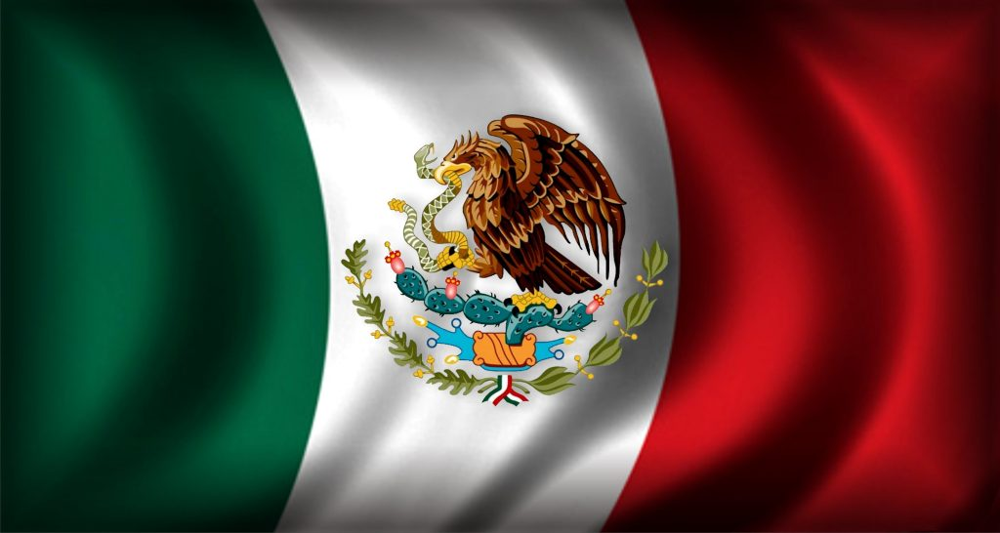

16 de Septiembre: Dia De La Independencia de México
La lucha por la Independencia de México inició la madrugada del 16 de septiembre de 1810. El cura Miguel Hidalgo incitó, con el famoso Grito, a la población de Dolores, hoy llamada Dolores Hidalgo, a levantarse en contra de las autoridades del Virreinato de la Nueva España.
Miguel Hidalgo y Costilla

Conocido como Miguel Hidalgo y Costilla o como Miguel Hidalgo, fue un sacerdote y revolucionario novohispano que destacó iniciando la primera etapa de la Guerra de Independencia de México con un acto conocido en la historiografía mexicana como Grito de Dolores.
Historia de la Independencia resumida
La conquista española de los aztecas y otros imperios mesoamericanos comenzó alrededor del año 1519 cuando los españoles comandados por Hernán Cortés, anclaron en el islote de San Juan de Ulúa, Veracruz, en busca de riqueza.
Este llamado a la insurrección de Hidalgo y los demás revolucionarios ayudó a movilizar a los ciudadanos de México a levantarse contra la corona española. La independencia se alcanzó eventualmente en el año de 1821.
Juan Aldama, José María Morelos e Ignacio Allende fueron algunos de los revolucionarios que ayudaron a Hidalgo a asegurar la independencia de España y sus nombres se mencionan con frecuencia en esta fecha.
Autores de la Independencia de México
- Miguel Hidalgo y Costilla
- Jose Maria Morelos
- Ignacio Allende
- Agistin Iturbide
- Juan Aldama